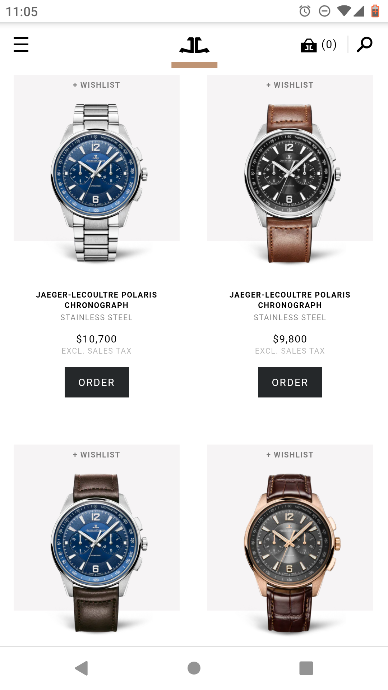

PARC: Proximity
Target
Target has grouped three like pictures for proximity. The grouping is all of athletic wear and showcases that Target has athletic gear for men, women, and children.
PARC: Alignment
National Honey Board
Honey.com consistently aligns all its text on the same line to the right. This alignment carries through contrasting sections creating continuity. It is very appealing and creates a great use of space regardless of where the type is overlaid— white space or over background.
PARC: Repetition
Jaeger-LeCoultre: Polaris Collection
Jaeger-LeCoultre's page for their Polaris Collection is in theme with ascethic of a finelly made swiss watch. It utilizes repition and excellent use of white space to create a precise look that is inline with its products.